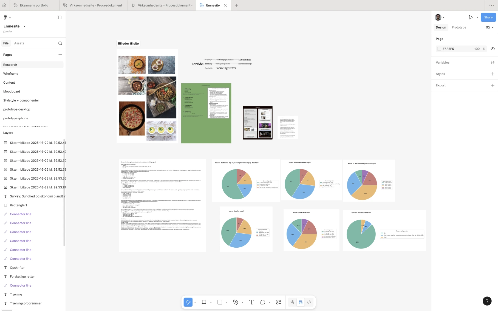
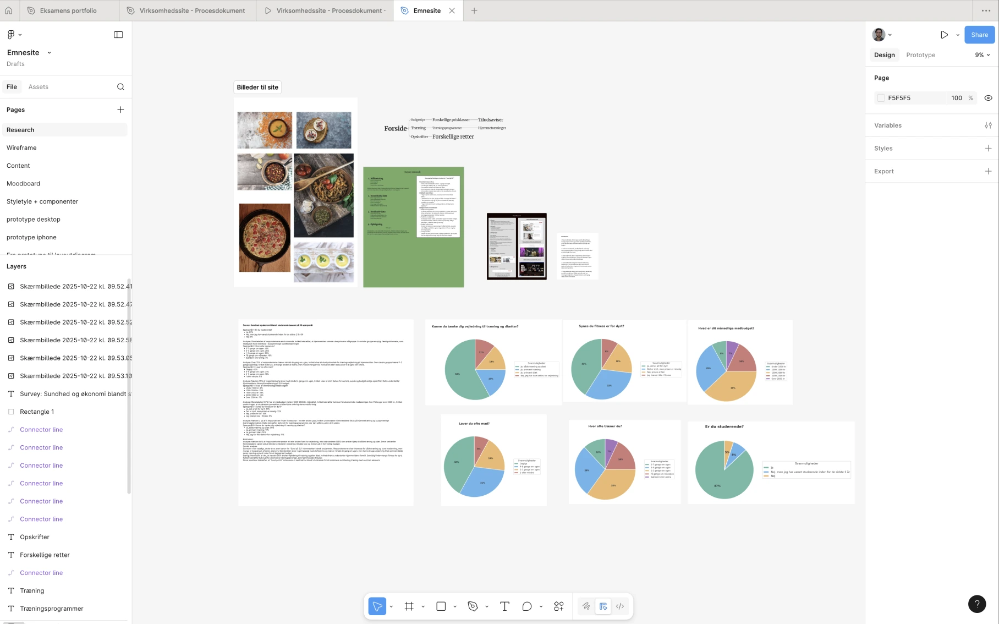
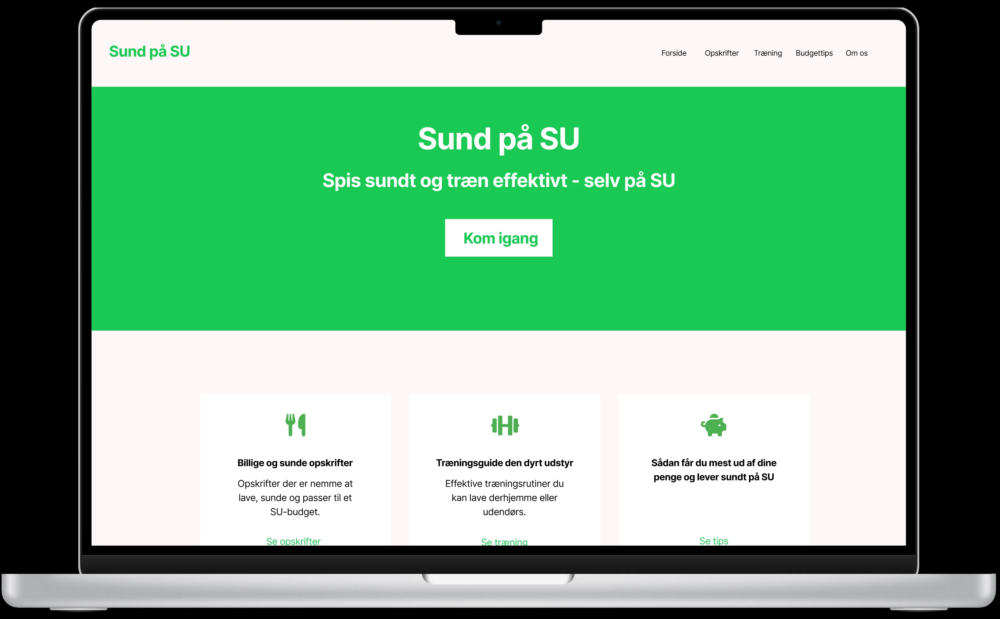
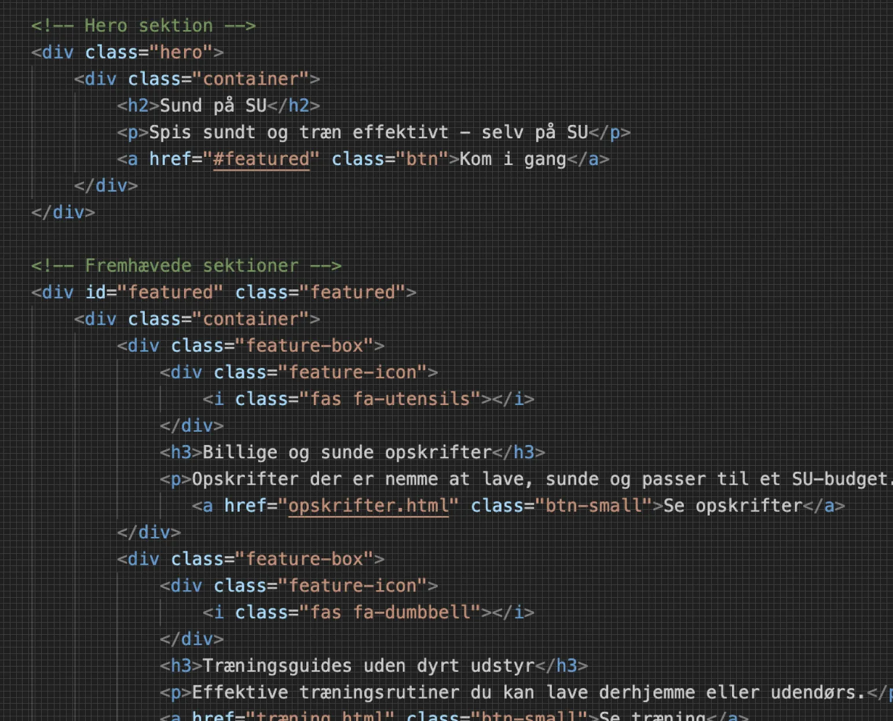
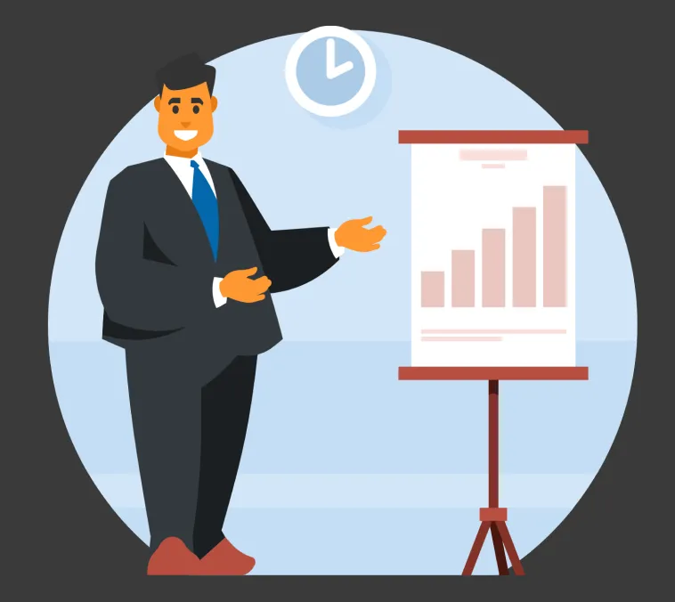

Research & idé
Jeg undersøgte brugerens behov og definerede problem/fokus. Derefter lavede jeg idéudvikling og planlagde indhold via wireframes, moodboard og styletile.
I tema 3 arbejdede jeg med grundlæggende UX- og UI-principper med fokus på at designe løsninger ud fra brugerens behov frem for egne antagelser. Jeg arbejdede med UX-processen fra research og indsigt til idéudvikling, wireframes, prototyper og brugertest.
Her kan du se de vigtigste dele af mit arbejde i tema 3:
Jeg undersøgte brugerens behov og definerede problem/fokus. Derefter lavede jeg idéudvikling og planlagde indhold via wireframes, moodboard og styletile.
Jeg lavede en hi-fi prototype i Figma og arbejdede med layout til både desktop og mobil, så designet kunne testes og forbedres tidligt.
Jeg implementerede designet i HTML og CSS og arbejdede med struktur og layout, så løsningen blev responsiv og overskuelig.
Til sidst præsenterede jeg min proces og mit produkt, hvor jeg forklarede mine designvalg og hvad jeg lærte undervejs.
Jeg har lært at designe digitale løsninger med udgangspunkt i brugerindsigter frem for antagelser. Fokus har været på research, designproces, prototyper og brugertest.

SE MERE OMKRING MIG OG MIT PORTFOLIO
Velkommen til mit portfolio, hvor du kan udforske mere omkring, hvad det vil sige at være multimediedesigner på første semester. Herunder vil du følge hele min proces og alle mine projekter.